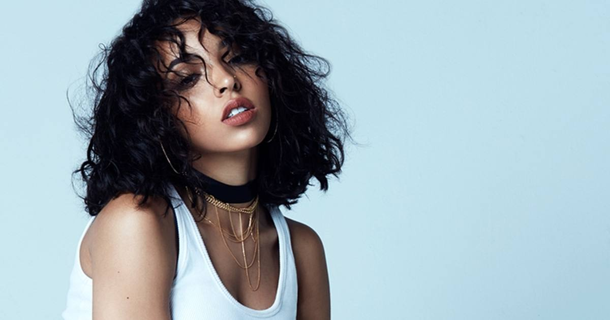

Tinashe Announces 'The Show Must Go On' 2027 Tour
Tinashe will take her latest album Popstar on the road in 2027 with 'The Show Must Go On' — a North American run opening with two Brooklyn Paramount nights and closing in Los Angeles, including a Boston stop at Roadrunner on April 28.

Tinashe is taking the show on the road. The singer announced "The Show Must Go On," a 2027 North American tour in support of her latest album, Popstar.
The tour
The run opens with two nights at Brooklyn Paramount — October 24 and 25, 2026 — then resumes in spring 2027, with stops including Glendale, Dallas, Austin, Houston, Nashville, Atlanta, Charlotte, Washington, Philadelphia and Boston, before closing with three nights at Los Angeles' Shrine Expo Hall in May. The Boston date is April 28, 2027 at Roadrunner. Select dates, including the two Glendale stadium shows, are with Harry Styles.
Popstar reached No. 6 on the Billboard 200, the highest-charting album of her career.
Why it matters
A tour announcement this size is a statement of where Tinashe sits right now: coming off the biggest album of her career, headlining rooms like Roadrunner and the Shrine, and sharing stadium bills with Harry Styles. The Brooklyn opening weekend doubles as the victory lap and the launchpad.
Sources: Consequence